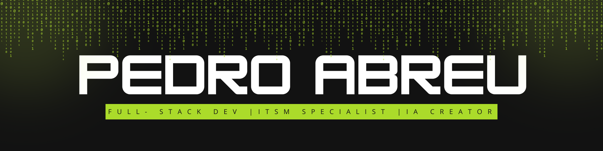

👾 Pedro Abreu
💻 Full-Stack Dev | ⚙️ ITSM Expert | 🧠 Criador da IA SOL
🚀 Sobre mim
Sou movido por tecnologia, inovação e um sopro criativo que vem do verde da natureza.
Atualmente atuo como Analista de Sistemas com foco em ITSM (BMC Helix), mergulhando também no desenvolvimento web e em projetos ousados de IA local — com memória, contexto e personalidade de verdade.
🛠 Tecnologias e Ferramentas
📬 Contato
Email: seuemail@example.com
LinkedIn: seulinkedin